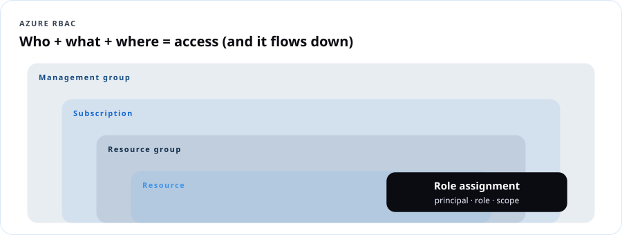
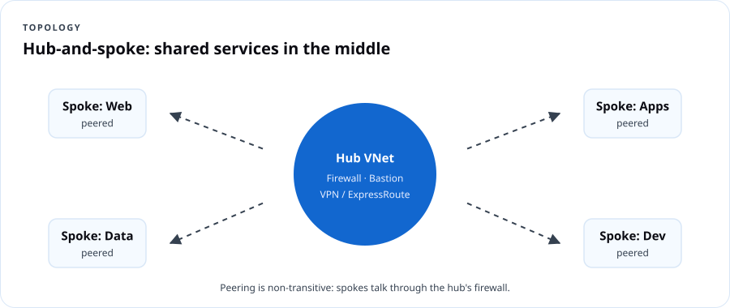

AZ-104 Azure Administrator
Course overview
If AZ-900 taught you the language, AZ-104 teaches you to run the building. Azure administrators create identities, assign access, enforce policy, build networks, deploy compute, protect storage, watch everything and recover when it breaks. This course follows Microsoft's skills outline as of April 17, 2026 and puts a keyboard in your hands for every objective — portal and command line and Bicep.
The exam at a glance
| Item | Detail |
|---|---|
| Exam | AZ-104: Microsoft Azure Administrator |
| Credential | Microsoft Certified: Azure Administrator Associate |
| Passing score | 700 |
| Price | $165 USD in the U.S. (varies by country) |
| Renewal | Annually, by a free online assessment on Microsoft Learn |
| Recommended background | OS, networking, servers, virtualization; PowerShell, Azure CLI, the portal, ARM templates or Bicep, Microsoft Entra ID |
| Free prep | Study guide · Practice assessment · Exam sandbox |
Exam weights (current)
| Domain | Weight | DCT lessons |
|---|---|---|
| Manage Azure identities and governance | 20–25% | 1, 2, 3 |
| Implement and manage storage | 15–20% | 4, 5 |
| Deploy and manage Azure compute resources | 20–25% | 6, 7 |
| Implement and manage virtual networking | 15–20% | 8, 9 |
| Monitor and maintain Azure resources | 10–15% | 10 |

Learning outcomes
- Manage Entra users, groups, licenses, guests and SSPR.
- Assign and interpret Azure RBAC at every scope.
- Govern subscriptions with Policy, locks, tags, management groups and budgets.
- Secure and configure storage accounts, SAS, keys, redundancy, replication and encryption.
- Operate Blob Storage and Azure Files: tiers, soft delete, snapshots, lifecycle, versioning.
- Read, modify and deploy ARM templates and Bicep files.
- Build and manage VMs, disks, zones, scale sets, containers and App Service.
- Build VNets, peering, routes, NSGs/ASGs, Bastion, service and private endpoints, DNS and load balancers — and troubleshoot them.
- Monitor with metrics, logs (KQL), alerts, Insights and Network Watcher.
- Back up and recover with Recovery Services vaults, Backup vaults and Site Recovery.
Lab environment
- Your own Azure subscription (pay-as-you-go with a $25 budget, or Azure for Students). Every lab ends with a teardown step. Budget ~$10–20 total if you tear down promptly.
- Tools: Azure portal, Cloud Shell (Bash), optionally local Azure CLI and VS Code with the Bicep extension.
- Naming convention used:
rg-104-<lesson>, regioneastus(swap for yours). - Microsoft's free official lab repo: AZ-104 labs on GitHub.
Watch your wallet: Bastion, VPN gateways, Application Gateway, Site Recovery and premium SKUs bill by the hour whether you use them or not. Labs that create these tell you to delete them the same day.
Assessment
| Component | Weight |
|---|---|
| Lesson knowledge checks (10) | 20% |
| Labs with evidence (10) | 40% |
| Capstone: build and defend "Ward 7 Community Health" environment | 25% |
| 50-question practice exam | 15% |
Lesson 1 — Microsoft Entra users and groups
Exam objectives: create users and groups; manage user and group properties; manage licenses in Entra ID; manage external users; configure SSPR.
1.1 Identities you'll manage
| Object | Notes |
|---|---|
| Member users | Cloud-only or synced from on-prem AD (Entra Connect / Cloud Sync) |
| Guest (external) users | B2B collaboration; UserType = Guest; invited by email; sign in with their own identity |
| Security groups | Grant access to resources and apps |
| Microsoft 365 groups | Collaboration (shared mailbox, Teams, SharePoint) |
| Assigned vs. dynamic membership | Dynamic groups use rules like (user.department -eq "Finance") — requires Entra ID P1 |
Dope Translation: You're running HR and the front desk at the same time. Users are employees. Guests are vendors with a visitor badge. Groups are crews — give the crew the key once instead of cutting 40 separate keys.
1.2 Licenses
Licenses (Microsoft 365, Entra ID P1/P2) are assigned to users or groups (group-based licensing). A user needs a usage location set before a license can be assigned. Group-based licensing is the admin-efficient answer on the exam.
1.3 Self-service password reset (SSPR)
- Scope: None / Selected (one group) / All.
- Authentication methods required: 1 or 2 (admins always need 2).
- Methods: mobile app notification/code, email, mobile phone, office phone, security questions (not for admins).
- Registration can be required at next sign-in; re-confirm every N days.
- Password writeback (for synced users) requires Entra Connect/Cloud Sync and P1.
1.4 Beyond the exam — but your job
Privileged Identity Management (PIM): just-in-time, time-bound admin roles with approval (Entra ID P2). Not in the AZ-104 outline; it's covered in DCT Cloud Security and SC-500.
Lab 1 — Identity operations (60 min)
# Create a user
DOMAIN=$(az ad signed-in-user show --query userPrincipalName -o tsv | cut -d@ -f2)
az ad user create --display-name "Kai Brooks" \
--user-principal-name kai.brooks@$DOMAIN \
--password "Use-A-Long-Passphrase-2026!" --force-change-password-next-sign-in true
# Create a security group and add the user
az ad group create --display-name "sg-helpdesk" --mail-nickname sg-helpdesk
az ad group member add --group sg-helpdesk \
--member-id $(az ad user show --id kai.brooks@$DOMAIN --query id -o tsv)
Portal tasks:
1. Set Kai's usage location and department = IT.
2. Users → New user → Invite external user: invite a personal email address as a guest. Accept it from that inbox.
3. Password reset → Properties: enable SSPR for Selected → sg-helpdesk, 2 methods.
4. If you have a P1 trial: create a dynamic group dg-it with rule user.department -eq "IT" and watch Kai appear.
Evidence: screenshots of group membership, guest user (UserType Guest), SSPR settings. Teardown: delete test users and guest.
Lesson 1 knowledge check
Lesson 2 — Manage access to Azure resources (RBAC)
Exam objectives: manage built-in Azure roles; assign roles at different scopes; interpret access assignments.
2.1 The RBAC formula
Security principal (who) + role definition (what) + scope (where) = role assignment.

| Scope | Inherits to |
|---|---|
| Management group | All child MGs, subscriptions, RGs, resources |
| Subscription | All RGs and resources |
| Resource group | All resources in it |
| Resource | Only that resource |
Key built-ins: Owner, Contributor, Reader, User Access Administrator, Role Based Access Control Administrator (can assign roles, with optional conditions limiting which roles), and service roles like Virtual Machine Contributor, Storage Blob Data Reader/Contributor, Network Contributor.
2.2 Interpreting access
- RBAC is additive: effective permissions = union of all assignments.
- Deny assignments (created by Azure, e.g., managed apps/deployment stacks) override allows.
- Role definitions split Actions (control plane: manage the resource) and DataActions (data plane: read the blob). Owner on a storage account does not automatically let you read blob data with Entra auth — you need a Storage Blob Data role.
- Azure RBAC roles ≠ Entra roles (Global Administrator manages the directory, not Azure resources — though a Global Admin can elevate to User Access Administrator at root).
Dope Translation: Owning the building (Owner) doesn't mean you can read the mail inside tenant mailboxes (DataActions). Different key. Microsoft did that on purpose.
Lab 2 — Assign and prove (45 min)
az group create -n rg-104-rbac -l eastus
GID=$(az ad group show --group sg-helpdesk --query id -o tsv)
az role assignment create --assignee-object-id $GID --assignee-principal-type Group \
--role "Virtual Machine Contributor" --resource-group rg-104-rbac
az role assignment list -g rg-104-rbac -o table
- Portal →
rg-104-rbac→ Access control (IAM) → Check access for Kai. Note inherited vs. direct assignments. - Open the role definition JSON for Virtual Machine Contributor. Can it manage the VNet the VM's NIC connects to? (Read the Actions to answer.)
- Teardown: remove the assignment.
Lesson 2 knowledge check
Lesson 3 — Subscriptions and governance
Exam objectives: implement and manage Azure Policy; configure resource locks; apply and manage tags; manage resource groups; manage subscriptions; manage costs with alerts, budgets and Advisor; configure management groups.
3.1 Azure Policy
| Concept | Meaning |
|---|---|
| Definition | One rule (JSON) with an effect |
| Initiative (policy set) | A bundle of definitions — e.g., Microsoft cloud security benchmark, NIST SP 800-53 Rev. 5, FedRAMP High |
| Assignment | Definition/initiative applied at a scope, with parameters and exclusions |
| Effects | Deny, Audit, Append, Modify, AuditIfNotExists, DeployIfNotExists, Disabled, DenyAction, Manual |
| Remediation | For Modify/DeployIfNotExists, a remediation task fixes existing resources using a managed identity |
| Compliance | Evaluated on create/update and on a periodic cycle; trigger on demand with az policy state trigger-scan |
Dope Translation: RBAC decides who can walk in the kitchen. Policy decides what's allowed to be cooked. Even the head chef can't put shellfish on the menu if the policy says no shellfish.
3.2 Locks, tags, resource groups, subscriptions, management groups
- Locks:
CanNotDelete/ReadOnly; inherit downward; override RBAC. ReadOnly can have side effects (e.g., listing storage keys is a POST and gets blocked). - Tags: up to 50 per resource; not inherited — use the built-in Inherit a tag from the resource group policy (Modify effect).
- Moving resources: between RGs/subscriptions — source and target RGs are locked during the move; not every resource type supports moves; the resource's region doesn't change.
- Subscriptions: transfer billing ownership, change the directory, rename, cancel; subscription-level budgets.
- Management groups: root MG per tenant, up to 6 levels deep (excluding root), each subscription in exactly one MG.
3.3 Cost controls
Budgets (actual/forecast alerts, action groups), cost alerts, Advisor cost recommendations (resize/shut down idle VMs, buy reservations), reservations and savings plans.
Lab 3 — Governance build (60 min)
az group create -n rg-104-gov -l eastus --tags env=lab dept=it
# Require a 'dept' tag on resource groups (built-in definition)
DEF=$(az policy definition list --query "[?displayName=='Require a tag on resource groups'].name" -o tsv)
az policy assignment create --name require-dept-tag --policy $DEF \
--scope /subscriptions/$(az account show --query id -o tsv) \
--params '{"tagName":{"value":"dept"}}'
# Try to break it
az group create -n rg-104-notag -l eastus # should be denied
# Lock
az lock create --name nodelete --lock-type CanNotDelete --resource-group rg-104-gov
az group delete -n rg-104-gov --yes # should fail
Then: create a $10 budget on rg-104-gov with an action group that emails you; open Advisor → Cost.
Teardown: remove the lock, delete the policy assignment, delete the RG.
Lesson 3 knowledge check
Lesson 4 — Storage access and storage accounts
Exam objectives: storage firewalls and virtual networks; SAS tokens; stored access policies; access keys; identity-based access for Azure Files; create/configure accounts; redundancy; object replication; encryption; Storage Explorer and AzCopy.
4.1 Ways in, from strongest to weakest
| Method | Notes |
|---|---|
| Entra ID + RBAC (data roles) | Preferred. No secrets. Audit-friendly |
| User delegation SAS | SAS signed with Entra credentials; Blob only; max 7 days |
| Service SAS | Access to one service's resources; can reference a stored access policy |
| Account SAS | Multiple services; powerful; signed with account key |
| Access keys | Two keys = full control. Rotate (key1/key2 swap) or store in Key Vault. Consider disabling shared key access |
| Anonymous public read | Off by default; keep it off at the account level unless hosting public content |
Stored access policy: defines start/expiry/permissions on a container/share/queue/table; SAS tokens that reference it can be revoked by changing or deleting the policy (up to 5 per container).
Dope Translation: Access keys are the landlord's master key — lose it, rekey the whole building. A SAS is a valet ticket: one car, one night, one parking deck. A stored access policy is the valet stand's list — scratch your name off and every ticket under it stops working.
4.2 Network rules
Storage firewall: allow selected VNets/subnets (service endpoints), IP ranges, resource instances and trusted Microsoft services; or disable public access and use private endpoints.
4.3 Account configuration
- Kind/performance: Standard GPv2; Premium block blob, file, page blob.
- Redundancy: LRS, ZRS, GRS, RA-GRS, GZRS, RA-GZRS; change via portal (some conversions need a request or migration).
- Object replication: async copy of block blobs between accounts; requires blob versioning on both accounts and change feed on source.
- Encryption: always on (AES-256) with Microsoft-managed keys by default; customer-managed keys in Key Vault; infrastructure (double) encryption set at creation; encryption scopes per container/blob.
- Azure Files identity-based access: on-prem AD DS, Microsoft Entra Domain Services, or Microsoft Entra Kerberos (for hybrid identities); share-level RBAC (Storage File Data SMB Share Reader/Contributor/Elevated Contributor) + NTFS permissions.
4.4 Data movement
AzCopy (azcopy login, azcopy copy, azcopy sync) and Storage Explorer.
Lab 4 — Lock down a storage account (75 min)
RG=rg-104-stor; LOC=eastus; SA=st104$RANDOM
az group create -n $RG -l $LOC --tags dept=it
az storage account create -n $SA -g $RG -l $LOC --sku Standard_ZRS --kind StorageV2 \
--min-tls-version TLS1_2 --allow-blob-public-access false
ME=$(az ad signed-in-user show --query id -o tsv)
az role assignment create --assignee $ME --role "Storage Blob Data Contributor" \
--scope $(az storage account show -n $SA -g $RG --query id -o tsv)
az storage container create --account-name $SA -n reports --auth-mode login
echo "Q3 attendance: 412" > report.txt
az storage blob upload --account-name $SA -c reports -n report.txt -f report.txt --auth-mode login
# User delegation SAS, read-only, 1 hour
END=$(date -u -d "+1 hour" '+%Y-%m-%dT%H:%MZ')
az storage blob generate-sas --account-name $SA -c reports -n report.txt \
--permissions r --expiry $END --auth-mode login --as-user --full-uri
- Open the SAS URL in a browser (works). Wait for expiry or regenerate with a past
--startto see failure. - Networking → Enabled from selected virtual networks and IP addresses → add only your client IP. Test from Cloud Shell (blocked unless its IP is added).
- Access keys → rotate key1. Configuration → set Allow storage account key access = Disabled and observe what breaks.
- Use Storage Explorer with your Entra account to browse the container.
Teardown: delete
rg-104-stor.
Lesson 4 knowledge check
Lesson 5 — Azure Files and Blob Storage operations
Exam objectives: file shares; blob containers; storage tiers; soft delete for blobs and containers; snapshots and soft delete for Azure Files; blob lifecycle management; blob versioning.
5.1 Data protection features
| Feature | Protects against | Notes |
|---|---|---|
| Blob soft delete | Deleted/overwritten blobs | Retention 1–365 days |
| Container soft delete | Deleted containers | Retention 1–365 days |
| Blob versioning | Overwrites — keeps prior versions automatically | Pairs with soft delete; adds storage cost |
| Point-in-time restore | Restore block blobs to an earlier state | Requires versioning, change feed, soft delete |
| Azure Files share snapshots | Accidental changes to files | Read-only, incremental, up to 200 per share |
| Azure Files soft delete | Deleted shares | 1–365 days |
5.2 Tiers and lifecycle
Online tiers: Hot, Cool (30-day min), Cold (90-day min); offline Archive (180-day min), rehydrate with Standard or High priority. Lifecycle management rules move or delete blobs based on days since creation, modification or last access (last-access tracking must be enabled).
{
"rules": [{
"name": "age-out-reports",
"enabled": true,
"type": "Lifecycle",
"definition": {
"filters": { "blobTypes": ["blockBlob"], "prefixMatch": ["reports/"] },
"actions": { "baseBlob": {
"tierToCool": { "daysAfterModificationGreaterThan": 30 },
"tierToArchive":{ "daysAfterModificationGreaterThan": 180 },
"delete": { "daysAfterModificationGreaterThan": 2555 }
}}
}
}]
}
Dope Translation: Lifecycle management is the rule in grandma's house: if you haven't worn it in a month it goes to the closet, six months it goes to the attic, seven years it goes to Goodwill. Nobody has to remember — the house does it.
Lab 5 — Protect and age data (60 min)
- New account (
Standard_LRS). Data protection: enable blob soft delete (7 days), container soft delete (7 days), versioning. - Upload
notes.txt, overwrite it twice, then delete it. Use Show deleted blobs and Versions to restore the first version. - Save the JSON above as
policy.jsonand apply:bash az storage account management-policy create --account-name $SA -g $RG --policy @policy.json - Create an Azure Files share
teamshare(Transaction optimized), upload a file, take a snapshot, edit the file, restore from snapshot. Teardown: delete the RG.
Lesson 5 knowledge check
Lesson 6 — ARM templates, Bicep and virtual machines
Exam objectives: interpret, modify and deploy ARM templates and Bicep files; export a deployment / convert ARM to Bicep; create VMs; encryption at host; move VMs; sizes; disks; availability zones and sets; Virtual Machine Scale Sets.
6.1 Reading infrastructure as code
ARM template sections: $schema, contentVersion, parameters, variables, resources, outputs (plus functions). Bicep is the same thing, readable:
@description('Storage account name')
param name string = 'st${uniqueString(resourceGroup().id)}'
param location string = resourceGroup().location
@allowed(['Standard_LRS','Standard_ZRS'])
param sku string = 'Standard_LRS'
resource sa 'Microsoft.Storage/storageAccounts@2023-05-01' = {
name: name
location: location
sku: { name: sku }
kind: 'StorageV2'
properties: {
minimumTlsVersion: 'TLS1_2'
allowBlobPublicAccess: false
}
}
output endpoint string = sa.properties.primaryEndpoints.blob
Deploy and convert:
az deployment group create -g rg-104-iac --template-file main.bicep --parameters sku=Standard_ZRS
az deployment group what-if -g rg-104-iac --template-file main.bicep # preview changes
az bicep decompile --file exported-template.json # ARM → Bicep
Deployment modes: Incremental (default — adds/updates, leaves others) vs. Complete (deletes resources in the RG not in the template).
Dope Translation: A Bicep file is the recipe card. ARM is the kitchen that cooks it exactly the same every time.
what-ifis tasting the sauce before you serve it.
6.2 Virtual machines — admin essentials
| Task | Key facts |
|---|---|
| Sizes | Families: B (burstable), D (general), E (memory), F (compute), L (storage), N (GPU). Resize may need a deallocate if the size isn't on the current hardware cluster |
| Disks | OS disk, data disks, temporary disk (non-persistent!). Types: Standard HDD, Standard SSD, Premium SSD, Premium SSD v2, Ultra. Expand size; attach/detach; snapshots |
| Encryption at host | Encrypts temp disk and caches at the host; register the EncryptionAtHost feature; set at create or while deallocated. (Azure Disk Encryption is on a retirement path — prefer encryption at host) |
| Availability | Availability set: fault domains + update domains in one datacenter (99.95% SLA). Availability zones: separate datacenters (99.99% with 2+ zones) |
| Scale sets (VMSS) | Flexible orchestration (recommended) vs. Uniform; autoscale on metrics or schedule; span zones |
| Move | To another RG/subscription via Move; to another region via Azure Resource Mover or Site Recovery |
Lab 6 — Code it, build it, resize it (90 min)
az group create -n rg-104-vm -l eastus --tags dept=it
az feature register --namespace Microsoft.Compute --name EncryptionAtHost # one-time
az vm create -g rg-104-vm -n vm-web1 --image Ubuntu2404 --size Standard_B2s \
--admin-username azureuser --generate-ssh-keys --zone 1 \
--public-ip-sku Standard --encryption-at-host true --nsg-rule NONE
az vm disk attach -g rg-104-vm --vm-name vm-web1 --name vm-web1-data --new --size-gb 32 --sku StandardSSD_LRS
az vm list-vm-resize-options -g rg-104-vm -n vm-web1 -o table
az vm resize -g rg-104-vm -n vm-web1 --size Standard_B2ms
az vmss create -g rg-104-vm -n vmss-web --image Ubuntu2404 --instance-count 2 \
--zones 1 2 3 --orchestration-mode Flexible --admin-username azureuser --generate-ssh-keys
Then deploy the Bicep storage file above into rg-104-iac, run what-if after changing the SKU, and export the VM's template from the portal and decompile it.
Teardown: delete rg-104-vm and rg-104-iac today.
Lesson 6 knowledge check
Lesson 7 — Containers and App Service
Exam objectives: Azure Container Registry; ACI; Azure Container Apps; container sizing and scaling; App Service plans and scaling; create App Service; TLS/certificates; custom DNS; backup; networking; deployment slots.
7.1 Containers
| Service | Use | Scaling |
|---|---|---|
| Azure Container Registry (ACR) | Private image registry; SKUs Basic/Standard/Premium (geo-replication, private link) | — |
| Azure Container Instances (ACI) | Single containers/groups, fast, per-second billing | Manual; set CPU/memory per container group |
| Azure Container Apps | Serverless containers on managed Kubernetes (KEDA-based) | Autoscale on HTTP, events, CPU; scale to zero |
7.2 App Service
- Plan = the compute (tier + instance count). Tiers: Free/Shared → Basic → Standard → Premium v3 → Isolated v2. Slots, autoscale and daily backups start at Standard; Basic supports manual scale out.
- Scale up (bigger tier) vs. scale out (more instances, manual or autoscale rules).
- Custom domains: verify with a TXT record (
asuid.<subdomain>) plus CNAME (subdomain) or A record (apex). TLS: free App Service managed certificate, imported cert, or Key Vault cert; enforce HTTPS only and minimum TLS 1.2. - Backup: automatic backups (supported tiers) or custom backups to a storage account.
- Networking: inbound — access restrictions, private endpoints; outbound — VNet integration to reach private resources.
- Deployment slots: staging slot → warm up → swap (zero-downtime); slot-specific ("sticky") settings stay with the slot.
Dope Translation: A deployment slot is the dressing room. The new outfit gets checked in the mirror backstage. When it's right, swap — the crowd sees you walk out already dressed. Something's off? Swap back.
Lab 7 — Ship it with zero downtime (75 min)
RG=rg-104-app; az group create -n $RG -l eastus --tags dept=it
az acr create -g $RG -n acr104$RANDOM --sku Basic
az container create -g $RG -n aci-hello --image mcr.microsoft.com/azuredocs/aci-helloworld \
--os-type Linux --cpu 1 --memory 1.5 --ports 80 --dns-name-label aci104$RANDOM
az containerapp up -g $RG -n ca-hello --image mcr.microsoft.com/k8se/quickstart:latest \
--ingress external --target-port 80
az appservice plan create -g $RG -n plan104 --sku S1 --is-linux
APP=web104$RANDOM
az webapp create -g $RG -p plan104 -n $APP --runtime "NODE:20-lts"
az webapp update -g $RG -n $APP --https-only true
az webapp deployment slot create -g $RG -n $APP --slot staging
az webapp deployment slot swap -g $RG -n $APP --slot staging --target-slot production
In the portal: add an autoscale rule on the plan (CPU > 70% → +1 instance, max 3), set an app setting as deployment slot setting, and review Networking → access restrictions.
Teardown: delete rg-104-app (the S1 plan bills hourly).
Lesson 7 knowledge check
Lesson 8 — Virtual networks and secure access
Exam objectives: VNets and subnets; peering; public IPs; user-defined routes; troubleshoot connectivity; NSGs and ASGs; effective security rules; Azure Bastion; service endpoints; private endpoints.
8.1 Address planning
CIDR refresher: /16 = 65,536 addresses; /24 = 256; /26 = 64; /27 = 32. Azure reserves 5 IPs per subnet (first four and last). Address spaces in peered VNets must not overlap.

8.2 Connectivity
- Peering: non-transitive (A↔B and B↔C does not give A↔C); configure both directions; options: allow forwarded traffic, gateway transit, use remote gateways.
- Public IPs: Standard SKU (zone-redundant, secure by default, static) — Basic SKU was retired September 30, 2025.
- User-defined routes (UDRs): route tables on subnets to override system routes — e.g.,
0.0.0.0/0 → VirtualAppliance 10.0.0.4(a firewall).
8.3 Filtering
- NSG rules: priority 100–4096, lower number wins, first match stops processing; 5-tuple (source, source port, destination, destination port, protocol); default rules (65000+) allow VNet and load balancer traffic, deny the rest inbound.
- NSG on subnet and NIC: inbound traffic is evaluated by the subnet NSG then the NIC NSG; both must allow.
- Application security groups (ASGs): group NICs by role (
asg-web,asg-db) and write rules against them instead of IPs. - Effective security rules: the merged view per NIC — your first stop when troubleshooting.
Dope Translation: NSG rules are the bouncer's list read top to bottom. The first line that matches your name decides — in or out — and he stops reading. Lower number = higher on the list.
8.4 Secure admin access and PaaS access
- Azure Bastion: browser-based RDP/SSH over TLS without public IPs on VMs. Needs a subnet named
AzureBastionSubnet(/26 or larger for Basic/Standard). SKUs: Developer (free, limited), Basic, Standard, Premium. - Service endpoints: extend a subnet's identity to a PaaS service; traffic uses the Azure backbone; the service still has a public endpoint.
- Private endpoints: a NIC with a private IP from your subnet for a specific PaaS resource; needs private DNS (
privatelink.blob.core.windows.net) to resolve correctly.
Lab 8 — Hub, spoke, and lockdown (120 min — delete the same day)
RG=rg-104-net; L=eastus; az group create -n $RG -l $L --tags dept=it
az network vnet create -g $RG -n vnet-hub --address-prefixes 10.0.0.0/16 \
--subnet-name AzureBastionSubnet --subnet-prefixes 10.0.1.0/26
az network vnet create -g $RG -n vnet-spoke1 --address-prefixes 10.1.0.0/16 \
--subnet-name web --subnet-prefixes 10.1.1.0/24
az network vnet peering create -g $RG -n hub-to-spoke1 --vnet-name vnet-hub \
--remote-vnet vnet-spoke1 --allow-vnet-access
az network vnet peering create -g $RG -n spoke1-to-hub --vnet-name vnet-spoke1 \
--remote-vnet vnet-hub --allow-vnet-access
az network asg create -g $RG -n asg-web
az network nsg create -g $RG -n nsg-web
az network nsg rule create -g $RG --nsg-name nsg-web -n allow-http --priority 100 \
--direction Inbound --access Allow --protocol Tcp --destination-port-ranges 80 \
--destination-asgs asg-web
az network vnet subnet update -g $RG --vnet-name vnet-spoke1 -n web --network-security-group nsg-web
az vm create -g $RG -n vm-spoke1 --image Ubuntu2404 --size Standard_B1s \
--vnet-name vnet-spoke1 --subnet web --public-ip-address "" --nsg "" \
--asgs asg-web --admin-username azureuser --generate-ssh-keys
- Deploy Bastion (Basic) into the hub; connect to
vm-spoke1over SSH in the browser through peering. - NIC → Effective security rules. Explain each line.
- Create a storage account; add a private endpoint in
webwith private DNS integration; from the VM,nslookup <account>.blob.core.windows.netreturns a 10.x address. - Create a route table with
0.0.0.0/0 → VirtualAppliance 10.0.0.4, associate toweb, and observe broken internet egress in Network Watcher → Next hop. Remove it. Teardown: deleterg-104-nettoday (Bastion bills hourly).
Lesson 8 knowledge check
Lesson 9 — Name resolution and load balancing
Exam objectives: configure Azure DNS; configure an internal or public load balancer; troubleshoot load balancing.
9.1 Azure DNS
- Public DNS zones: host your domain's records (A, AAAA, CNAME, MX, TXT, SRV, CAA, NS); delegate by updating NS records at your registrar. Alias records point at Azure resources (public IP, Front Door, Traffic Manager) and update automatically.
- Private DNS zones: name resolution inside VNets; virtual network links with optional auto-registration of VM records.
- Azure DNS Private Resolver: conditional forwarding between on-prem and Azure private zones.
9.2 Azure Load Balancer (Layer 4)
| Part | Purpose |
|---|---|
| Frontend IP | Public (internet-facing) or private (internal) |
| Backend pool | VMs/VMSS instances (by NIC or IP) |
| Health probe | TCP/HTTP/HTTPS check; unhealthy instances removed |
| Load-balancing rule | Frontend port → backend port; distribution (5-tuple hash default, or session persistence by client IP) |
| Inbound NAT rule | Port-forward to a specific VM |
| Outbound rule | SNAT for backend internet egress |
Standard SKU only (Basic retired Sept 30, 2025): zone-redundant, secure by default — backends need an NSG that allows the traffic.
9.3 Troubleshooting checklist
- Health probe status (Insights / metrics Health Probe Status). Is the app listening on the probe port/path?
- NSG on backend allows traffic from the client and from the
AzureLoadBalancerservice tag (probe source 168.63.129.16). - Backend in the right pool, VM running, guest firewall open.
- Rule ports correct; floating IP settings match the app design.
- Use Network Watcher (IP flow verify, connection troubleshoot).
Beyond the exam: choosing a load balancer
| Service | Layer | Scope | Use |
|---|---|---|---|
| Load Balancer | 4 | Regional | TCP/UDP for VMs |
| Application Gateway (+ WAF) | 7 | Regional | HTTP routing by path/host, TLS termination, WAF |
| Front Door | 7 | Global | Global HTTP acceleration, CDN, WAF |
| Traffic Manager | DNS | Global | DNS-based routing (priority, performance, geographic) |
Dope Translation: Load Balancer is the host at the door sending each party to the next open table. App Gateway reads your reservation and sends you to the right room. Front Door is the host stand in every city. Traffic Manager is the phone directory telling you which city to drive to.
Lab 9 — Balance it and break it (75 min)
- Create two Ubuntu VMs in a backend subnet with
cloud-initinstalling nginx (apt-get install -y nginxand write the hostname intoindex.html). - Create a Standard public Load Balancer: frontend IP, backend pool (both VMs), HTTP probe on
/, rule 80→80. - Refresh the frontend IP — watch both hostnames appear.
- Break it: stop nginx on one VM → probe marks it down → traffic shifts. Then remove the NSG allow rule → everything fails. Fix it with the checklist.
- Create a private DNS zone
corp.dctlinked to the VNet with auto-registration;nslookup vm1.corp.dctfrom the other VM. Teardown: delete the RG.
Lesson 9 knowledge check
Lesson 10 — Monitor and maintain
Exam objectives: interpret metrics; configure log settings; query and analyze logs; alert rules, action groups and alert processing rules; Insights for VMs, storage and networks; Network Watcher and Connection monitor; Recovery Services vault; Backup vault; backup policies; backup and restore; Site Recovery; failover; backup reports and alerts.
10.1 Azure Monitor building blocks

| Piece | Admin action |
|---|---|
| Metrics | Numeric time series (CPU %, requests); Metrics Explorer; near-real-time |
| Activity log | Who did what at the control plane (create/delete); 90 days by default |
| Resource logs | Per-resource detailed logs; need a diagnostic setting to send to Log Analytics, storage or Event Hubs |
| Log Analytics workspace | Central log store queried with KQL |
| Azure Monitor Agent + data collection rules | Collect guest OS logs/perf from VMs |
| Alert rules | Metric, log search, activity log, resource health, service health |
| Action groups | Who/what gets notified (email, SMS, webhook, Logic App, Function, ITSM) |
| Alert processing rules | Suppress (e.g., during maintenance) or add action groups at scale |
| Insights | VM insights, Storage insights, Network insights — prebuilt workbooks |
| Network Watcher | IP flow verify, next hop, connection troubleshoot, Connection monitor, packet capture, flow logs |
KQL you should be able to read:
// VMs that stopped sending heartbeats in the last 15 minutes
Heartbeat
| summarize LastBeat = max(TimeGenerated) by Computer
| where LastBeat < ago(15m)
// Who deleted resources today
AzureActivity
| where TimeGenerated > startofday(now())
| where OperationNameValue endswith "DELETE" and ActivityStatusValue == "Success"
| project TimeGenerated, Caller, ResourceGroup, _ResourceId
Dope Translation: Metrics are the dashboard gauges. Logs are the receipts. KQL is how you search the shoebox of receipts in two seconds. Action groups are who gets the phone call when the alarm goes off.
10.2 Backup and disaster recovery
| Recovery Services vault | Backup vault | |
|---|---|---|
| Protects | Azure VMs, SQL/SAP HANA in VMs, Azure Files, on-prem (MARS/MABS) | Azure Disks, Blobs, Azure Database for PostgreSQL, AKS |
| Also hosts | Azure Site Recovery | — |
- Backup policy: schedule (daily/hourly enhanced), retention (daily/weekly/monthly/yearly), instant restore snapshots.
- Restore options (VM): create new VM, restore disks, replace existing disk, file-level recovery, cross-region restore (GRS vault).
- Soft delete for backups (14 days default) and immutable vaults protect against ransomware.
- Azure Site Recovery: replicate VMs to a secondary region; test failover (isolated network, no impact), failover, commit, re-protect, failback. RPO = how much data you can lose; RTO = how long until you're back.
- Backup reports (Log Analytics + Backup center/Business Continuity Center) and built-in Azure Monitor alerts for job failures.
Lab 10 — Watch, alert, back up, fail over (120 min)
- Create a Log Analytics workspace. On a lab VM, enable VM insights (installs Azure Monitor Agent + DCR).
- Add a diagnostic setting on a storage account → send
StorageRead/Write/Deleteto the workspace. Run the KQL above. - Create an action group (your email) and a metric alert: CPU > 80% for 5 min. Run
stress(sudo apt install stress && stress --cpu 2 --timeout 600) and get the email. Then create an alert processing rule that suppresses it for one hour. - Network Watcher → Connection troubleshoot from the VM to
www.microsoft.com:443. - Create a Recovery Services vault; back up the VM with the default policy; Backup now; perform file recovery of one file.
- Enable Site Recovery replication of the VM to a paired region; run a test failover; clean up the test failover. Teardown: stop protection and delete backup data (soft delete may hold it 14 days), disable replication, delete RGs.
Lesson 10 knowledge check
Capstone — Ward 7 Community Health
A nonprofit clinic network in Washington, DC is moving to Azure. Build it, document it, and defend it in a 10-minute walkthrough.
Requirements
- Identity & governance: groups
clinic-admins,front-desk,it-contractors (guests); SSPR for staff; RBAC at RG scope; management group with an Allowed locations policy (two U.S. regions) and Require tagdept; CanNotDelete lock on data RG; $50 budget with action group. - Storage: patient-intake files in a private-endpoint-only storage account (GZRS), versioning + soft delete, lifecycle to Cool at 30 days and Archive at 365, no shared key access; staff share in Azure Files with snapshots.
- Compute: intake web app on App Service (Standard) with staging slot and VNet integration; a Linux VMSS (2 instances, zones) behind an internal Standard Load Balancer for a legacy scheduling API; one container job on Container Apps.
- Network: hub (Bastion) + two spokes, peering, NSGs with ASGs, private DNS zone, UDR to a (simulated) firewall IP in the hub.
- Operations: Log Analytics + VM insights, CPU and backup-failure alerts, Recovery Services vault backing up VMs daily (30-day retention), ASR test failover documented with RPO/RTO.
- IaC: at least the storage and network layers in Bicep, deployed with
what-ifoutput captured.
Rubric: working build & evidence 40 · security & least privilege 20 · IaC quality 15 · operations & recovery 15 · explanation to a non-technical director 10.
Cost note: build, record evidence, and tear down in one sitting. Estimated cost if deleted same day: under $10.
Practice exam (50 questions)
Glossary
| Term | Plain meaning |
|---|---|
| Action group | The call list for alerts |
| ASG | A nametag for NICs you can write NSG rules against |
| Bastion | Browser SSH/RDP without public IPs |
| Bicep | Readable infrastructure-as-code for Azure |
| DataActions | Permissions on the data inside a resource |
| DINE | DeployIfNotExists policy effect |
| Effective rules | The merged NSG view on a NIC |
| KQL | Kusto Query Language |
| Peering | Private VNet-to-VNet link, non-transitive |
| RPO / RTO | Data you can lose / time you can be down |
| SAS | Time- and scope-limited access token |
| SSPR | Self-service password reset |
| UDR | Custom route that overrides Azure's defaults |
Instructor notes
- Correct our own website: domain weights changed; networking is 15–20% and monitoring 10–15%. Identity & governance is 20–25%. PIM, Traffic Manager and Front Door are beyond the exam outline — teach them as career context.
- Teardown discipline: start every session by having learners run
az group list -o tableand delete anything left from last week. Show a real bill line from an orphaned Bastion. - Veterans: map RBAC scope to a chain of command and NSG priority to an ROE card read top-down.
- Teach the "control plane vs. data plane" split early. It explains RBAC, locks (ReadOnly breaking key listing), and storage access.
- Exam style: expect scenario case studies and some lab-like question formats. Drill reading CLI/Bicep snippets.
Resources
- Official AZ-104 study guide
- Microsoft AZ-104 lab repository
- Azure CLI reference
- Bicep documentation
- Azure Monitor KQL quick reference